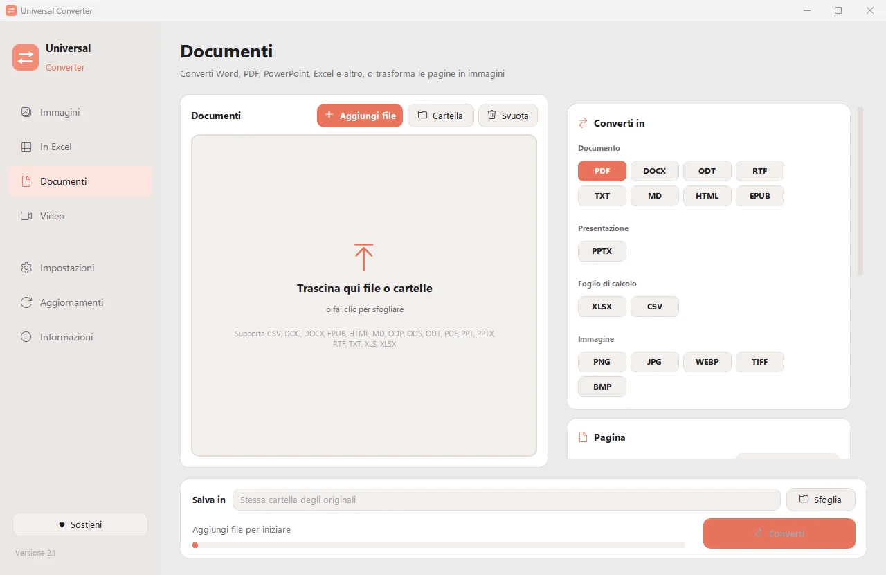

Trasformare un documento scansionato in un Word modificabile
Una scansione è solo un'immagine del testo, quindi non si può modificare né cercare. Universal Converter legge il testo con il riconoscimento del testo (OCR) sul tuo dispositivo e lo salva come file Word modificabile, in italiano, inglese, greco e molte altre lingue.
Gratis · Windows 10 e 11, 64 bit · Scansione antivirus
Scarica per Mac (beta) Apple silicon, macOS 12 o successivo
Scarica per Android Android 10 o successivo
Come fare
- Apri Universal Converter e scegli Documenti a sinistra.
- Trascina i file o un'intera cartella nella finestra, oppure fai clic su Aggiungi file.
- Scegli Word (DOCX). Scegli la lingua del testo o lascia l'impostazione automatica.
- Fai clic su Converti. I nuovi file vengono salvati accanto agli originali o nella cartella che scegli.

Perché offline?
Universal Converter lavora sul tuo dispositivo. I tuoi file restano privati, i file grandi non sono un problema e funziona senza connessione a internet.
Altre cose che può fare
- Comprimere un video senza caricarlo
- Convertire video tra MP4, MKV, WebM, MOV e AVI
- Salvare l'audio di un video in MP3
- Creare una GIF da un video
- Estrarre tabelle da un PDF in Excel
- Unire foto in un unico PDF
- Convertire un PDF in Word
- Unire più file in un PDF
- Copiare il testo da un'immagine (OCR)
- Convertire immagini tra JPG, PNG, WEBP e altri formati
- Ridimensionare immagini o ridurle a una dimensione del file
- Convertire un estratto conto PDF in Excel
- Estrarre tabelle da fatture PDF in Excel
- Convertire pagine PDF in immagini JPG
- Convertire documenti Word in PDF